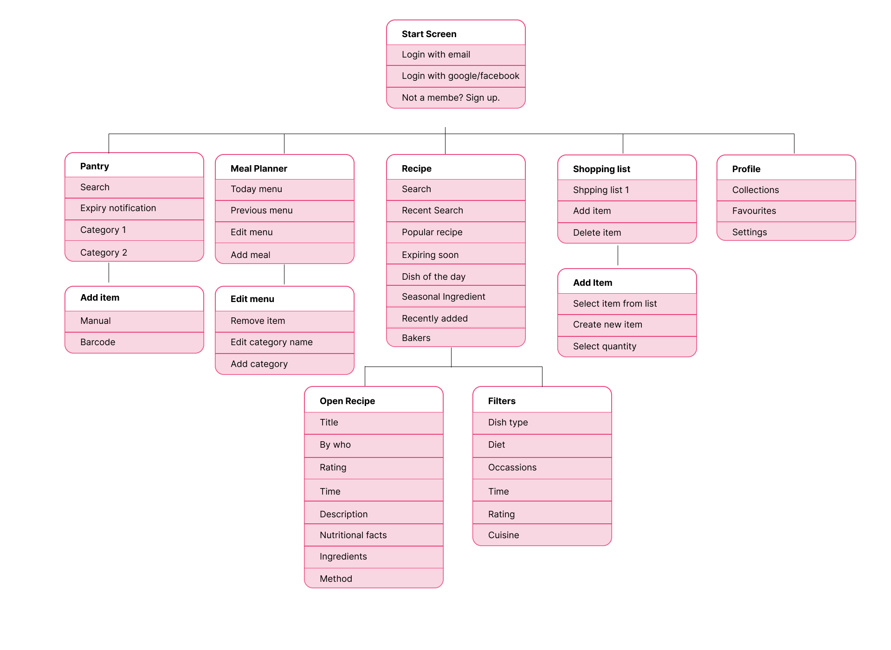

Timeline
12th sep-13 jan

Food Mate
Platform
IOS/Android App
IOS/Android App
My Role
UI Researcher/UI Designer
UI Researcher/UI Designer
Project Overview:
Food Mate is simple and minimalist mobile app that help users plan their meals for the week, generate a shopping list of needed ingredients, and provide information about the prices and locations of those ingredients at nearby grocery stores. This app was designed from scratch to help users save time and money while also encouraging healthier eating habits.
Problem Statement:
Many people struggle to plan their meals in advance and end up making unhealthy or expensive food choices. Additionally, grocery shopping can be time-consuming and confusing, especially when trying to find specific ingredients.
Background
Hypothesis
By developing a mobile app that simplifies meal planning and grocery shopping, we can help users save time and money while promoting healthy eating habits. The app's user-centric design, customized meal plans, and nutritional information will provide a seamless experience for users, resulting in increased engagement and positive user feedback.
Business Goals
- Subscription Model: The app can generate revenue by offering a subscription-based model that provides users with additional features such as personalized recipe recommendations, meal planning tools, and grocery delivery services.
- Partnership with Grocery Stores: Meal Mate can partner with grocery stores to offer in-app promotions and discounts on items on the shopping list. The app can also provide information about the location and availability of items in nearby grocery stores, encouraging users to shop at partner stores.
- Sponsored Content: Meal Mate can partner with food brands to promote healthy eating habits and showcase their products in the app. This can include sponsored recipes, nutritional information, and product recommendations.
Process
Sketches
I sketched multiple user flows to visualize ideas quickly. My focus at this stage is to diverge first, converge later. Here are some early sketches of the Brand page.
Userflow
I mapped each flow with the events taken.
Wireframes
A sneak peek into my early wireframes, mid-fidelity designs and drafts. The designs have went through at least 10 iterations per screen. It is simply to improve the user experience.

Final Designs
Here's a detailed walkthrough of the Food Mate app.